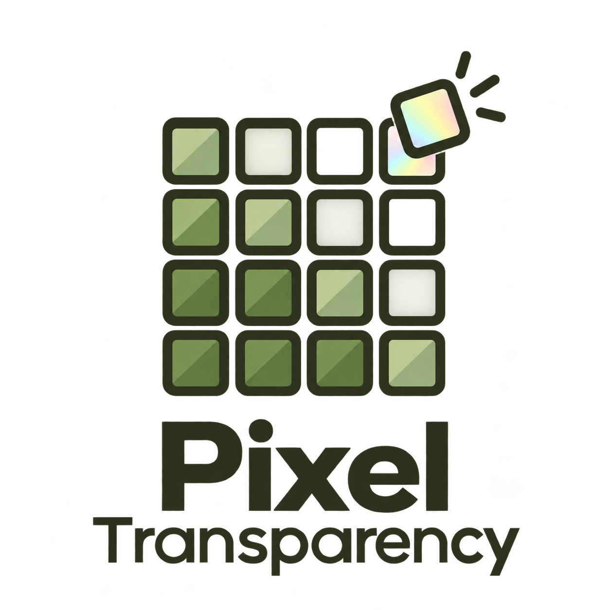
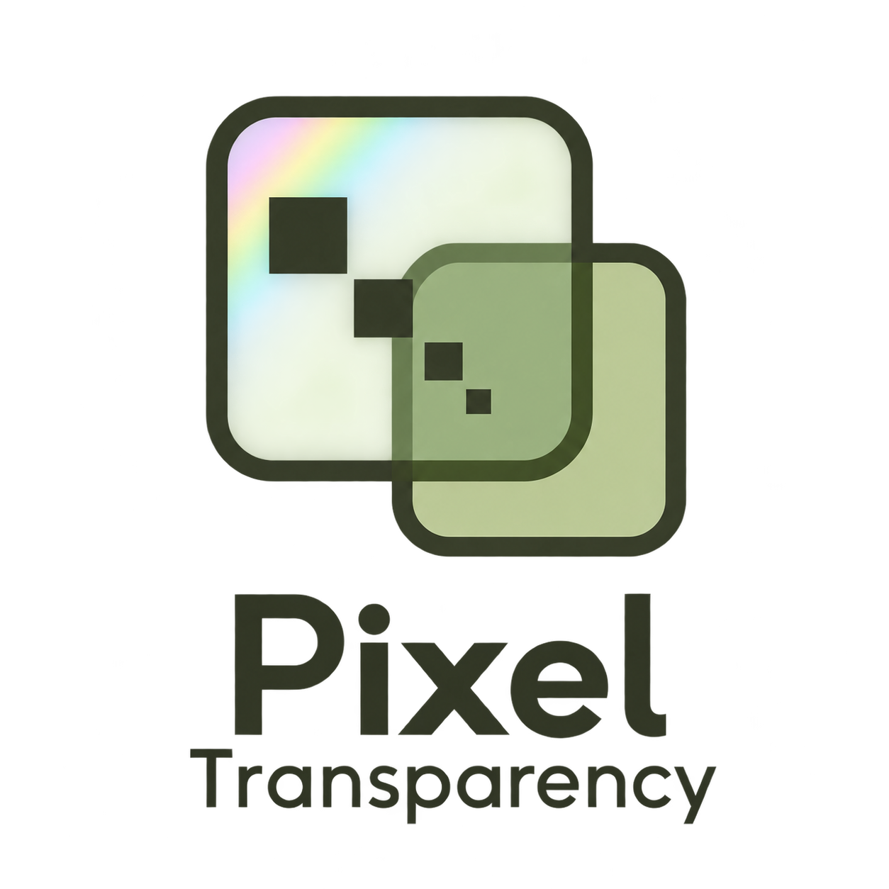
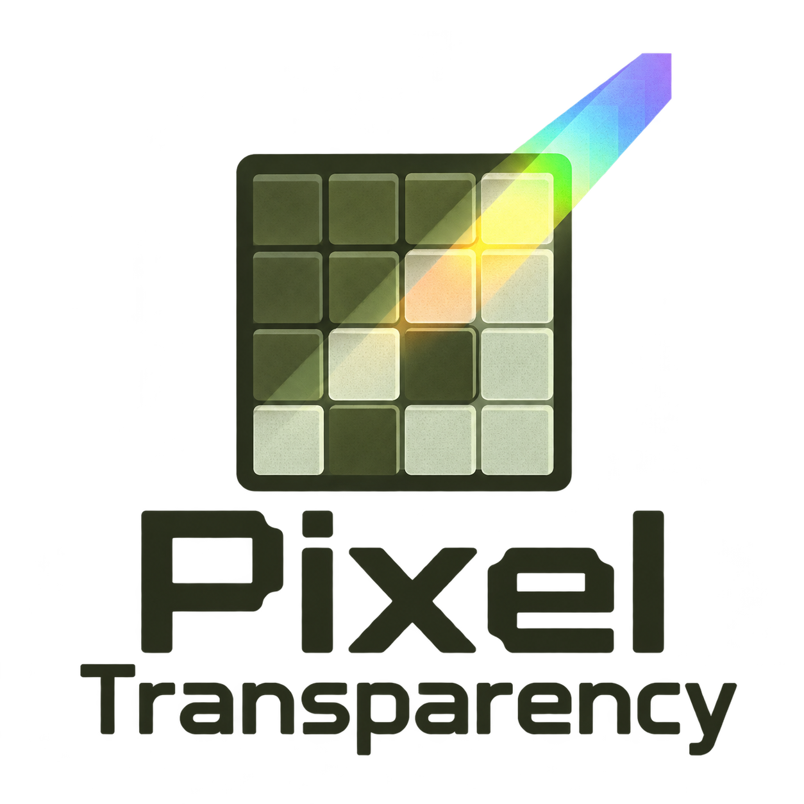
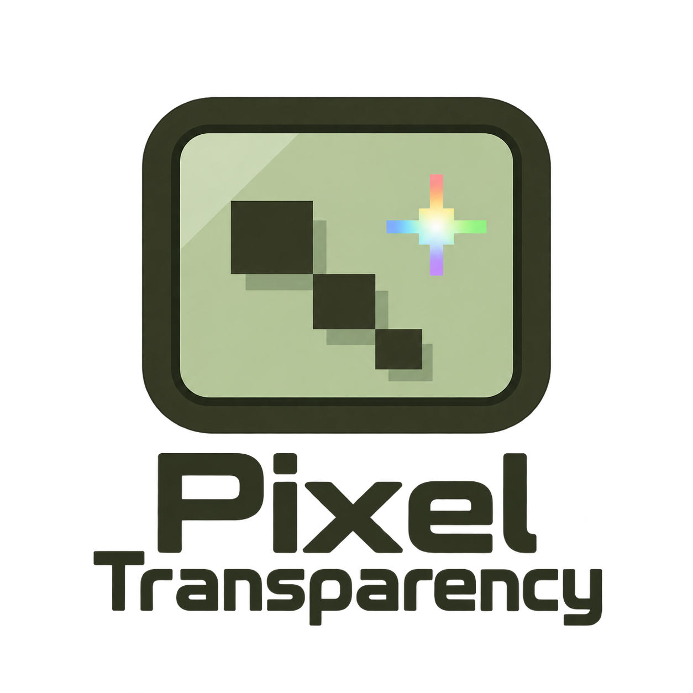

01 · Pixel Reveal

A disciplined 4-by-4 square LCD pixel matrix: dense solid green pixels at lower-left transition toward upper-right into outlined pixel cells and negative-space missing cells. One lifted corner pixel hints at the backing revealed underneath. Bold compact geometry and a calm modern sans-serif wordmark. Prioritize simplicity and recognizability.
02 · LCD Layers

Two elegantly offset rounded-square screen panes, one outlined and one bearing just a handful of crisp square pixels, visually showing a transparent LCD layer above a backing layer. Use simple flat geometry, almost architectural precision, no 3D rendering. The overlapping area has a subtle green tonal shift. An understated modern wordmark.
03 · Sunlight Shimmer

A compact square LCD pixel tile crossed by a diagonal shaft of light. A small stepped rainbow spectrum along the beam suggests sunlight revealing the reflective backing. Strong olive pixel geometry anchors the symbol; controlled iridescent color is the only gradient allowed. Sophisticated digital craft, readable sober wordmark.
04 · Pixel Monogram
A memorable interlocking PT monogram constructed from an aligned square pixel grid, with strategically omitted pixel cells giving transparency and a clever shared vertical stem. Letters must be recognizable and the silhouette compact, distinctive, and clean. Use olive-charcoal and muted green, entirely flat color. Wordmark uses a tasteful squared sans-serif.
05 · Reflective Display

A minimal nostalgic LCD display emblem: simple rounded rectangular screen frame enclosing three small stepped pixel blocks and one four-point pixel sparkle, subtly suggesting light on a reflective handheld screen. No buttons or recognizable branded console silhouette. Restrained soft green screen backing within the emblem, olive frame, an understated tiny spectrum accent at the sparkle. A clean subtly retro wordmark, no distressed texture.